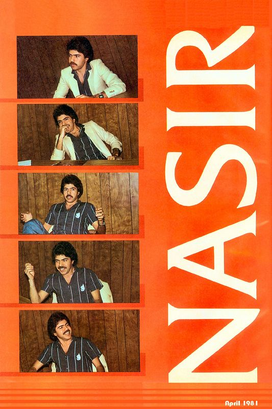

Horizon V places you on a planet “swarming” with malicious aliens. You will need to refuel your ship and periodically then continue “frying” more aliens. Softline’s March 1982 issue was not very favorable of the game claiming that Nasir Gebelli (the creator) should have spent more time on it and incorporated more elements.
Impact
While Softline did not favorably review Horizon V, a letter to the editor in the March 1982 issue (same issue as the review) had very positive remarks about the game, claiming Nasir really outdid himself. Nasir was praised by Softline as being a top name in game development, making the editors much more critical of a game they saw as lacking.

Production History
Horizon V was created in 1982. It was created by Nasir Gebelli. Horizon V was published by Gebelli Software.